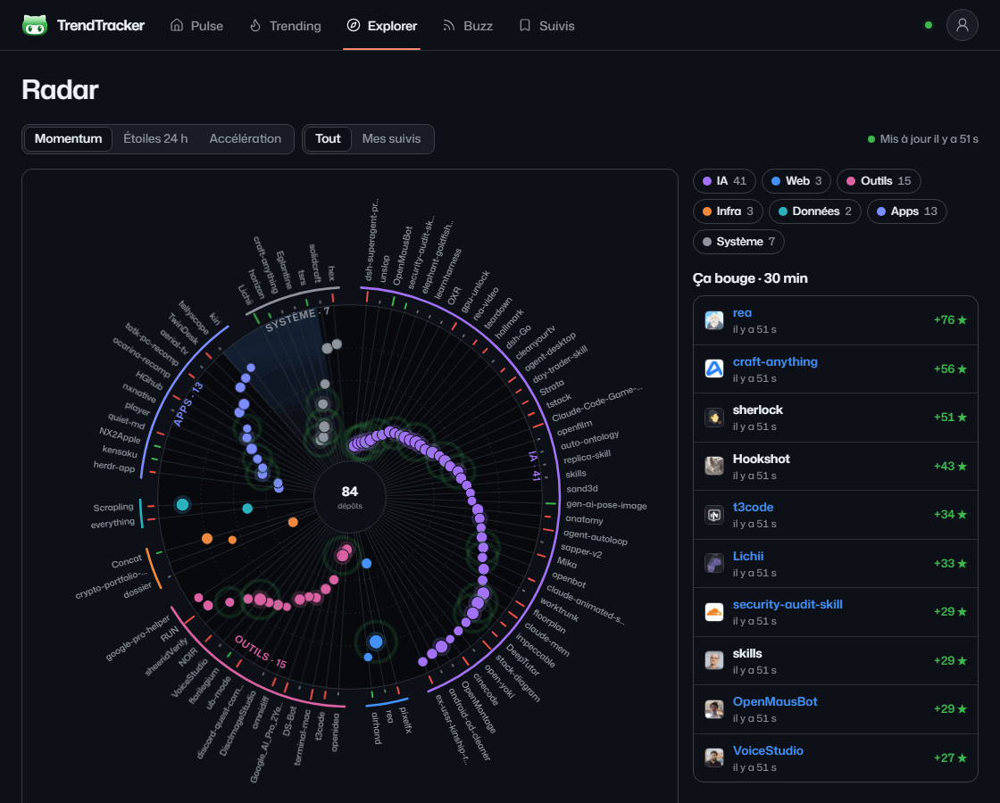
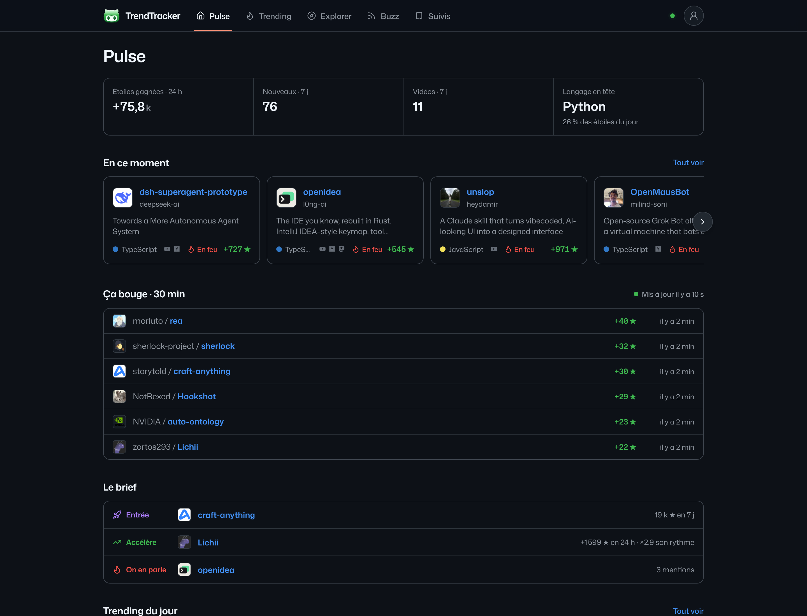
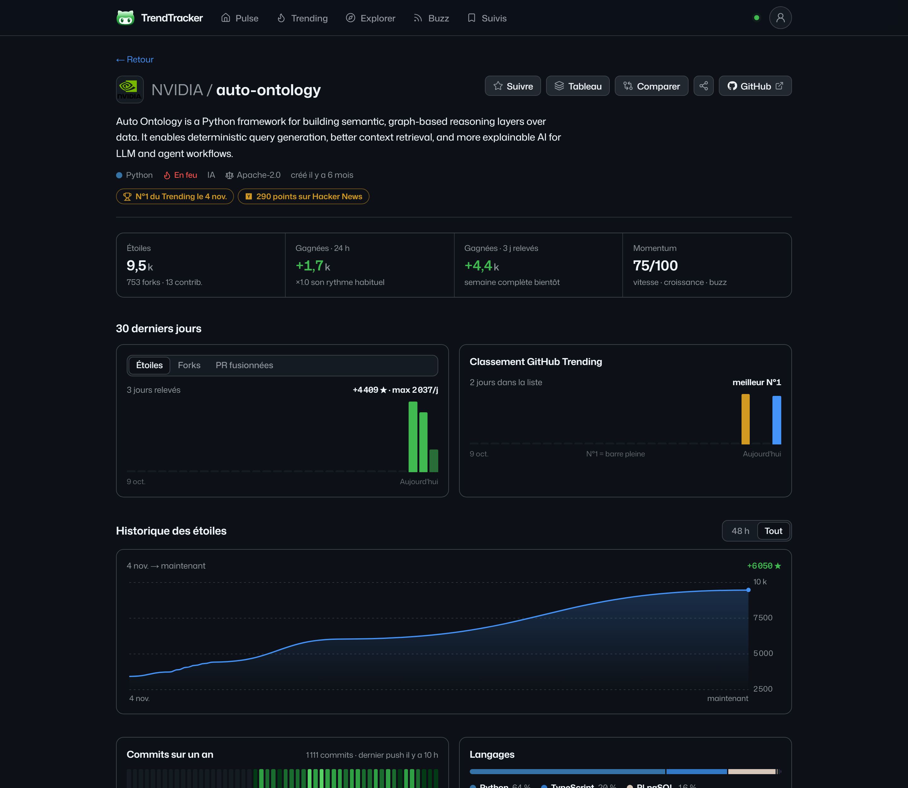
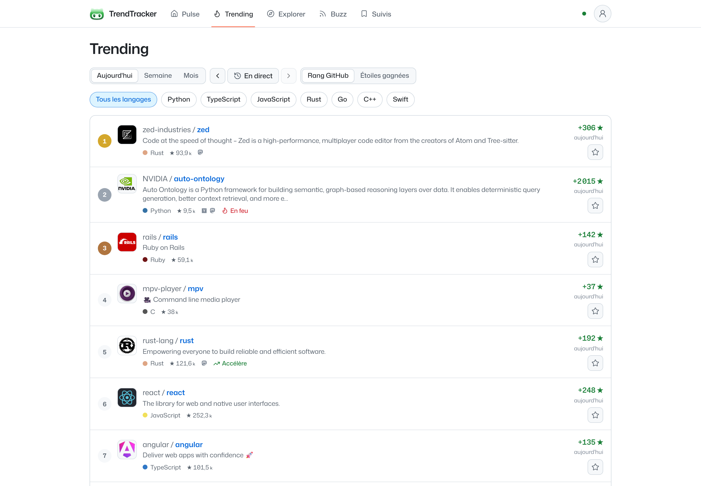
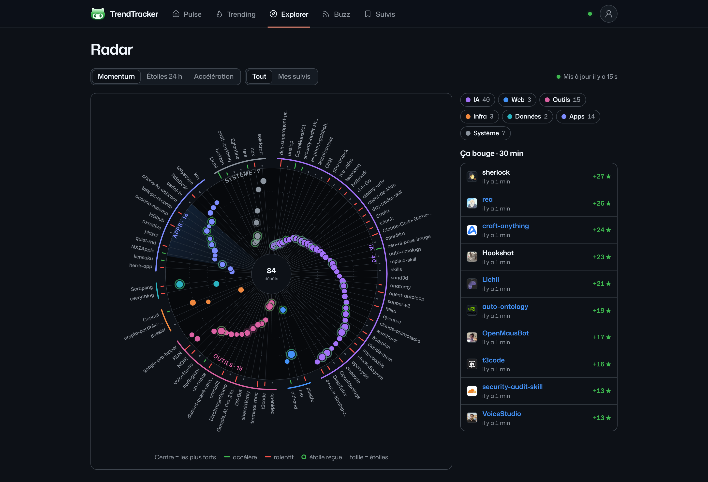

TrendTracker watches GitHub Trending, new repositories and the videos and posts that mention them. It keeps its own history, scores momentum, and shows it all on a live radar. Open source and self-hosted.

Every repository on screen is re-read each minute and pushed to the page. Counters tick, the radar ripples.
One spoke per repository, sectors by domain, strongest in the centre. Switch between momentum, 24 h stars and acceleration.
Gains over 24 h, 7 and 30 days from our own snapshots: always consistent, and "—" rather than a guess.
YouTube videos from 20 developer channels, Hacker News, Lobsters, Mastodon and Bluesky, linked to each repository.
GitHub Trending by day, week, month and language, kept every day, sortable by rank or by stars gained.
Boards with notes, public sharing, and an e-mail when a repository you follow enters Trending or spikes.




git clone https://github.com/jaggerTheStone/TrendTracker.git
cd TrendTracker
npm install
npm run dev # http://localhost:3000No database to install: an embedded Postgres is created on first run. Add a GitHub token with no scope for live counts every minute. Node.js 20.9 or later. The interface is in French for now; English is next on the roadmap.